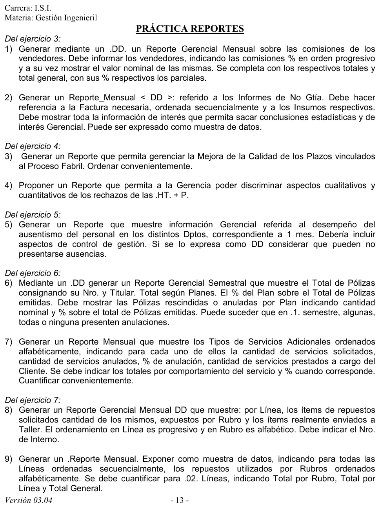

Práctica de reportes
Práctica de la cátedra, 2017
Enunciado


Propuesta de respuesta
Respuesta no verificada. La propuso Luta Studios con inteligencia artificial y ningún docente la revisó. Puede tener errores.
Cada reporte lleva título, temas con su criterio de orden y período, como pide el resumen de un alumno. Los números de las muestras son de ejemplo.
1. Comisiones de los vendedores (ejercicio 3)
Reporte_Comisiones = titulo + mes + anio + vendedor(e)
+ total_ventas + total_comisiones
vendedor(e) = nro_vendedor + ventas_monto + cobranza_porcentaje
+ comision_porcentaje + comision_monto
+ participacion_porcentajeLos vendedores van en orden progresivo de comision_porcentaje, de menor a mayor. participacion_porcentaje es la comisión del vendedor sobre el total de comisiones. Así se ve una muestra.
Comisiones de vendedores. Octubre
| Vendedor | Ventas | Comisión | Comisión en pesos | Del total de comisiones |
|---|---|---|---|---|
| 3 | 80000 | 2 % | 1600 | 10.53 % |
| 4 | 100000 | 2.5 % | 2500 | 16.45 % |
| 2 | 120000 | 3 % | 3600 | 23.68 % |
| 1 | 150000 | 5 % | 7500 | 49.34 % |
| Total general | 450000 | 15200 | 100 % |
2. Informes de no garantía del mes (ejercicio 3)
Una muestra de datos, ordenada por número de factura.
Informes de no garantía. Octubre
| ING | Factura | Fecha | Cliente | Vendedor | Insumo | Cantidad (u) | Requisito que no cumplió |
|---|---|---|---|---|---|---|---|
| 0041 | 1203 | 03/10 | C-118 | 2 | I-07 | 40 | Viscosidad |
| 0042 | 1210 | 07/10 | C-054 | 1 | I-12 | 150 | Humedad |
| 0043 | 1225 | 14/10 | C-118 | 2 | I-07 | 60 | Viscosidad |
| 0044 | 1238 | 21/10 | C-201 | 4 | I-31 | 25 | Viscosidad |
| 0045 | 1244 | 27/10 | C-077 | 1 | I-12 | 90 | Humedad |
| Total | 365 |
Resumen para la gerencia
| Corte | Valor |
|---|---|
| Informes de no garantía sobre facturas del mes | 5 de 120, o sea 4.17 % |
| Por requisito | Viscosidad 3 (60 %), humedad 2 (40 %) |
| Por insumo | I-07 2 (100 u), I-12 2 (240 u), I-31 1 (25 u) |
| Por vendedor | 1 con 2, 2 con 2, 4 con 1 |
Dos insumos juntan 4 de los 5 informes y 340 de las 365 unidades. El cliente C-118 recibió dos veces el mismo insumo fuera de norma. Es la conclusión que el listado solo no deja ver.
3. Calidad de los plazos del proceso fabril (ejercicio 4)
Ordenado de mayor a menor desvío, así los atrasos quedan arriba.
Plazos de los trabajos concluidos. Noviembre
| HT | Material | Fin según el PRP | Fin real | Desvío (días) | Materiales a tiempo | Causa |
|---|---|---|---|---|---|---|
| 0312 | Madera | 10/11 | 19/11 | 9 | No | Llegó tarde la madera |
| 0298 | Hierro | 05/11 | 11/11 | 6 | Sí | Falta de capacidad |
| 0305 | Aluminio | 08/11 | 11/11 | 3 | No | El proveedor demoró los perfiles |
| 0301 | Hierro | 06/11 | 06/11 | 0 | Sí | |
| 0320 | Madera | 15/11 | 14/11 | -1 | Sí |
Resumen. 3 de 5 trabajos terminaron fuera del standard, el 60 %. El desvío promedio es días. Los dos con materiales tarde suman 12 de los 18 días de atraso, así que la mejora empieza por la llegada de materiales del PRM.
4. Rechazos de pedidos y hojas de trabajo (ejercicio 4)
Lo cuantitativo es cuántos se rechazan y dónde. Lo cualitativo es el motivo. El total de 250 es el de la narrativa, y el reparto es de ejemplo.
Rechazos de pedidos y hojas de trabajo. Noviembre
| Instancia | Motivo | Material | Cantidad | Del total |
|---|---|---|---|---|
| Recepción, pedido | Supera el límite crediticio | 30 | 12 % | |
| Recepción, pedido | Fecha pedida incompatible con la duración standard | 40 | 16 % | |
| Planeamiento, hoja | No llega al mínimo de metraje ni al artístico | Hierro | 80 | 32 % |
| Planeamiento, hoja | No llega al mínimo de metraje ni al artístico | Aluminio | 60 | 24 % |
| Planeamiento, hoja | No llega al mínimo de metraje ni al artístico | Madera | 40 | 16 % |
| Total | 250 | 100 % |
Resumen. El 72 % se rechaza en Planeamiento, después del relevamiento en obra. Son 180 relevamientos hechos para nada en el mes. El motivo de casi todos es el metraje, que se podría controlar antes, en Recepción.
5. Ausentismo por departamento (ejercicio 5)
Reporte_Ausentismo = titulo + mes + anio + departamento(e)
+ ausentismo_planta
departamento(e) = cod_dpto + nombre_dpto + operarios
+ dias_hombre_laborables + (ausencia(e))
+ ausentismo_porcentaje + dias_bajo_minimo
+ estado(d)
ausencia(e) = motivo(d) + dias_hombre_perdidos
motivo(d) = <con aviso | vacaciones | sin aviso>
estado(d) = <bajo control | alarma>Hay un registro por cada uno de los ocho departamentos, por código. ausencia(e) va entre paréntesis porque un departamento puede no tener ausencias en el mes, y entonces ausentismo_porcentaje vale 0.
El control de gestión entra con dos datos. ausentismo_porcentaje es el ausentismo por días del catálogo del apunte, los días hombre perdidos sobre los laborables. dias_bajo_minimo cuenta los días en que el departamento quedó con menos de 30 presentes, que es cuando no puede operar. El estado pasa a alarma si hubo algún día bajo el mínimo.
6. Pólizas del semestre (ejercicio 6)
Reporte_Polizas = titulo + semestre + anio + plan(e)
+ total_polizas + total_anuladas
+ porcentaje_anuladas
plan(e) = cod_plan + descripcion_plan + poliza(e) + total_plan
+ porcentaje_plan + anuladas_plan
+ porcentaje_anuladas_plan
poliza(e) = nro_poliza + titular + estado(d)
estado(d) = <vigente | rescindida | anulada>porcentaje_plan es el total del plan sobre el total de pólizas emitidas. porcentaje_anuladas_plan también se calcula sobre el total emitido, como pide la consigna. Un plan puede no tener anulaciones, y entonces anuladas_plan vale 0. Si no hay ninguna en el semestre, total_anuladas vale 0.
7. Servicios adicionales del mes (ejercicio 6)
Los tipos van en orden alfabético.
Servicios adicionales. Noviembre
| Servicio | Solicitados | Anulados | Anulación | Prestados | Sin cargo | A cargo del cliente | A cargo del cliente sobre prestados |
|---|---|---|---|---|---|---|---|
| Gomería | 40 | 4 | 10 % | 36 | 30 | 6 | 16.67 % |
| Mecánica | 60 | 9 | 15 % | 51 | 45 | 6 | 11.76 % |
| Remolque | 50 | 5 | 10 % | 45 | 36 | 9 | 20 % |
| Total | 150 | 18 | 12 % | 132 | 111 | 21 | 15.91 % |
Los totales van por comportamiento del servicio, o sea, solicitado, anulado, prestado sin cargo y a cargo del cliente. Mecánica es el que más se anula. Las anulaciones son las asistencias que se cancelaron, el problema de la consigna 6 del ejercicio.
8. Repuestos por línea (ejercicio 7)
Reporte_Repuestos = titulo + mes + anio + linea(e)
+ total_solicitado + total_enviado
linea(e) = nro_linea + rubro(e) + total_linea_solicitado
+ total_linea_enviado
rubro(e) = cod_rubro + nombre_rubro + item(e)
+ total_rubro_solicitado + total_rubro_enviado
item(e) = nro_interno + cod_repuesto + descripcion
+ cantidad_solicitada + cantidad_enviadaLas líneas van en orden progresivo, de 100 a 500. Los rubros van en orden alfabético, que coincide con su código, de 1 Carrocería a 5 Varios. cantidad_enviada puede ser menor que la solicitada si el repuesto no estaba o la reposición no era viable.
9. Repuestos utilizados por línea y rubro (ejercicio 7)
Una muestra cuantificada para dos líneas.
Repuestos utilizados. Noviembre
| Rubro | Línea 100 | Línea 200 | Total por rubro |
|---|---|---|---|
| 1 Carrocería | 6 | 5 | 11 |
| 2 Electrónica | 4 | 7 | 11 |
| 3 Mecánica | 12 | 9 | 21 |
| 4 Rodamientos | 8 | 10 | 18 |
| 5 Varios | 3 | 4 | 7 |
| Total por línea | 33 | 35 | 68 |
El reporte completo sigue con las líneas 300, 400 y 500 en columnas. El 68 de la esquina es el total general.
Respuesta no verificada. Puede tener errores.
Se armó con las páginas del parcial, secciones Reportes, Diccionario de datos y Catálogo del apunte.
Quedó en duda: Todos los números de las muestras son de ejemplo, salvo el total de 250 rechazos del reporte 4, que da la narrativa. En el reporte 1, la consigna pide el porcentaje de cada parcial y se tomó sobre el total de comisiones. En el 5, la alarma por días bajo el mínimo es una elección. La estructura del reporte sale del resumen de un alumno, y las pautas de orden, totales y porcentajes salen de las consignas.